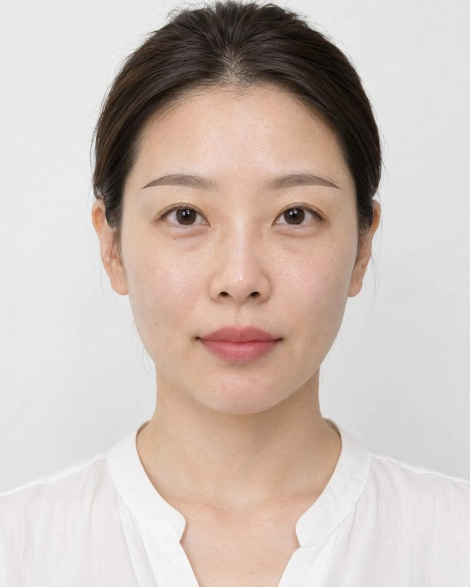
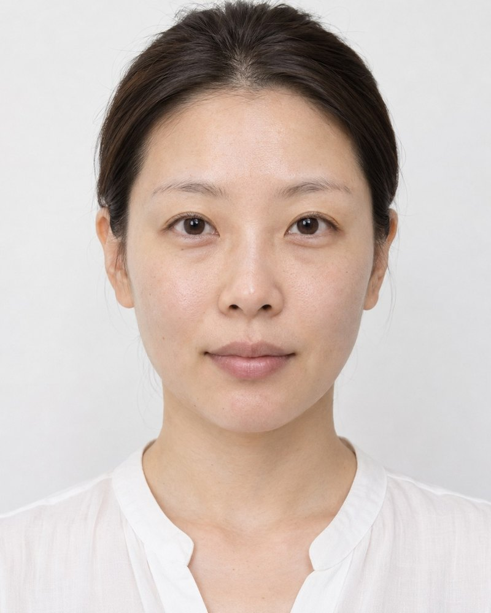
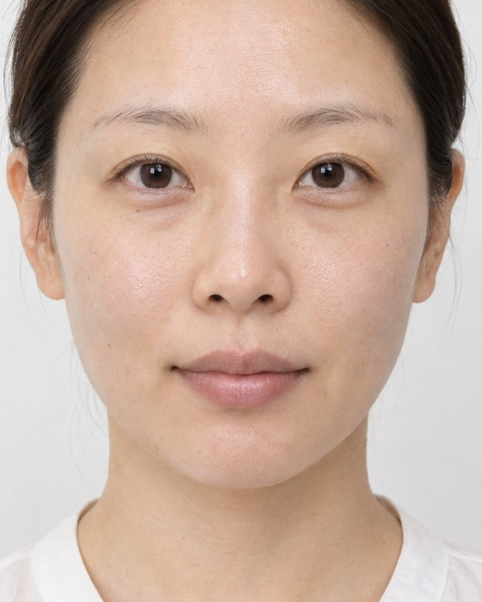
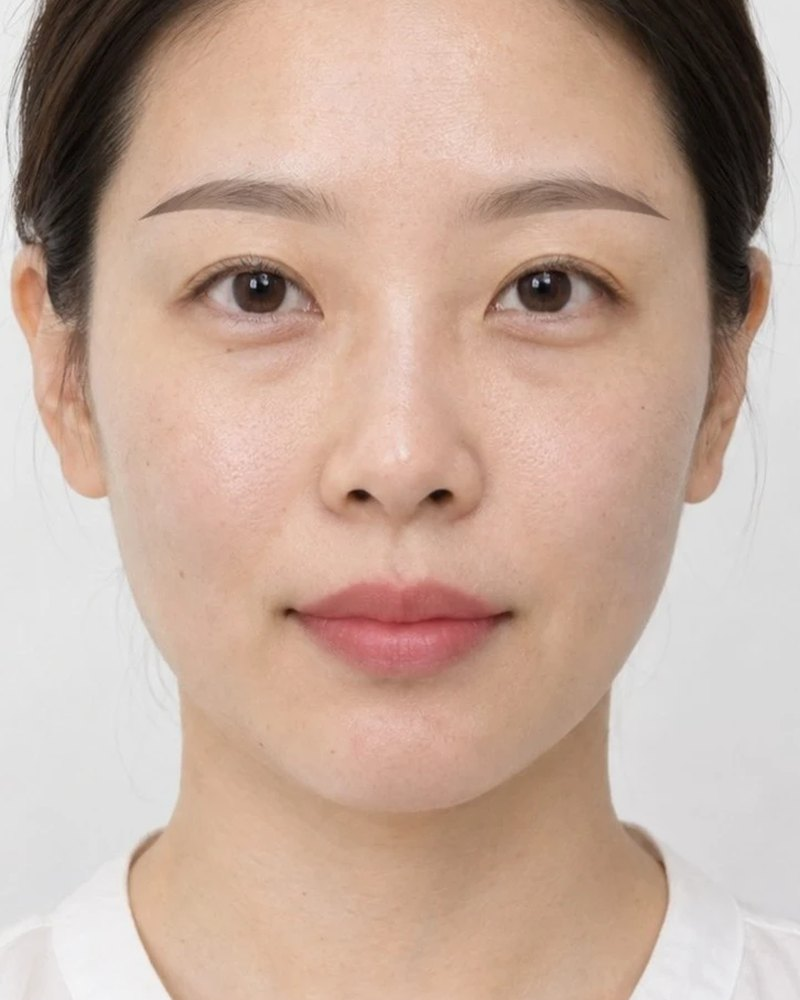
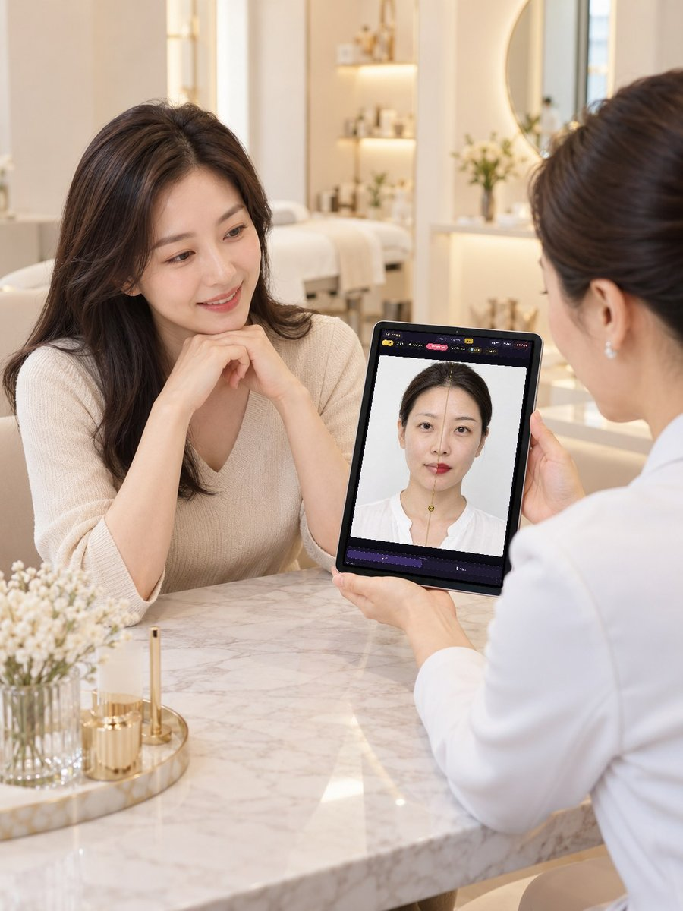
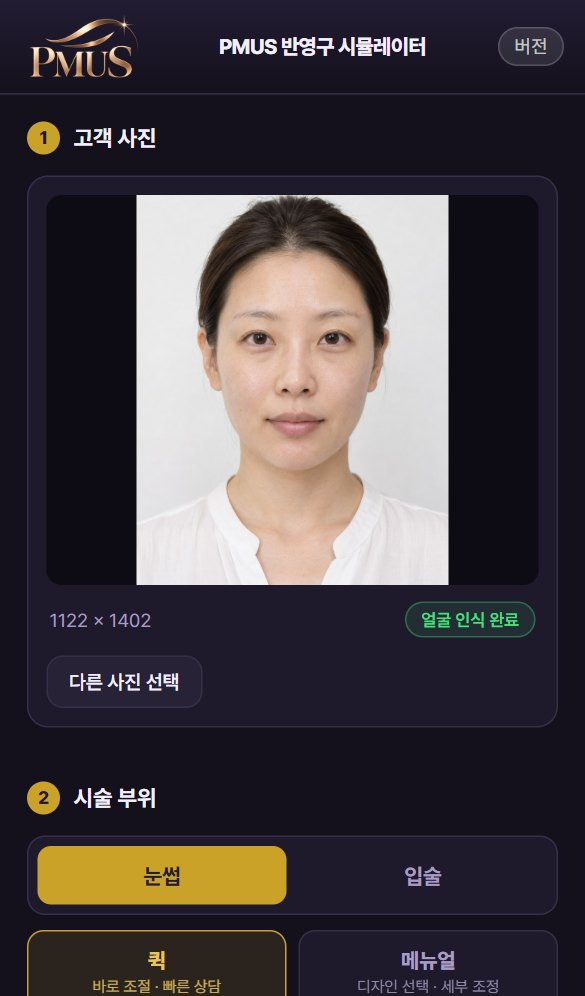
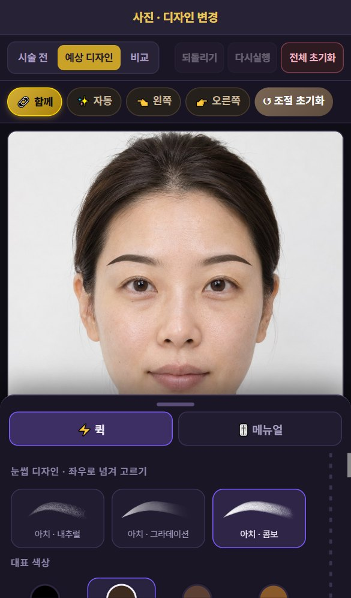
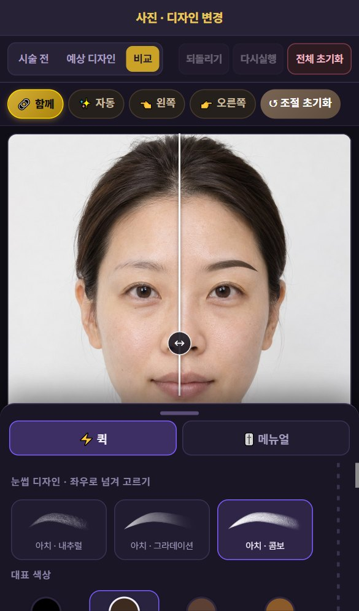
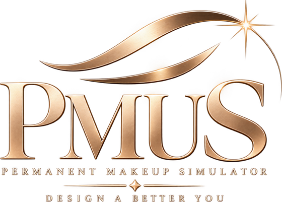

디자인과 시술 후 결과가 다릅니다
디자인펜슬로 그리며 상담하던 블랙 컬러로는 시술 후 자연결, 두께, 컬러 등을 고객님이 상상하기 힘들어합니다.
눈썹 반영구 상담 시뮬레이터
디자인펜슬로 그려주며 하던 상담은 이제 끝입니다. 고객 얼굴 사진 한 장만 요청하세요. 시술 후 눈썹을 그 자리에서 보여 드릴 수 있습니다. 고객은 확신하고, 원장님은 설명이 줄어듭니다.


상담실에서 매일 듣는 말
고객의 요청
일자 눈썹이 어울리지 않아도, 가져오신 연예인 사진의 눈썹이 어울리지 않아도, 고객님의 원래 눈썹모가 너무 진해서 상담이 어려워도… 아무리 자세히 말로 설명해도, 고객이 시술 후 자기 모습을 정확히 떠올리기는 어렵습니다.
고객의 불안
처음 받는 반영구에는 늘 이 불안이 함께 옵니다. PMUS는 이 불안을 시술 전에, 사진 한 장으로 줄여 드립니다.
말로 설명하던 반영구 상담을,
눈으로 확인하는 상담으로.
왜 만들었나
상담 때 블랙 디자인펜슬로 직접 그려 보여주는 방식을 오랫동안 하지 않으셨어요? 하지만 현장에서는 고객님께 “이렇게 진하지는 않아요.” “블랙컬러는 아니에요.” “이렇게 두꺼워지지는 않아요.”라는 말을 해 보신 적은 없으신가요?
디자인펜슬로 그리며 상담하던 블랙 컬러로는 시술 후 자연결, 두께, 컬러 등을 고객님이 상상하기 힘들어합니다.
디자인 하나를 바꿀 때마다 지우고 다시 그리시진 않으신가요? 피부는 붉어지고, 고객도 원장님도 지칩니다.
고객의 진한 원래 눈썹 위에 그리면 완성된 모습이 떠오르지 않습니다. 결국 "해 봐야 안다"로 끝납니다.
아치와 일자를 동시에 비교할 방법이 없습니다. 고객은 하나를 보고 나머지는 말로만 듣습니다.
지금까지
PMUS와 함께
현장에서 설계한 솔루션
PMUS는 개발자가 상상으로 만든 프로그램이 아닙니다. 교육과 시술 현장의 두 원장이 매일 겪던 불편을 하나씩 기능으로 옮겼습니다.
교육생들이 가장 어려워하는 건 손기술보다 디자인 상담입니다. 고객과 눈으로 먼저 합의할 수 있어야 시술이 편해집니다.
디자인펜슬로 그려 드리면 고객은 그 선을 기억하세요. 그런데 실제 결과는 결이 다르죠. 처음부터 결과에 가까운 모습을 보여 드리고 싶었어요.
주요 기능
디자인 즉시 교체
아치·세미아치·일자, 내추럴·그라데이션·콤보까지 12가지 디자인을 손가락으로 넘기며 고객 얼굴에 바로 입혀 봅니다. 지우고 다시 그릴 일이 없습니다.


기존 눈썹 흐리게
조절바 하나로 고객의 원래 눈썹을 피부색으로 흐립니다. 진한 눈썹 위에서도 새 디자인만 또렷하게 보여 줄 수 있습니다.
얼굴 인식 자동 배치
눈과 얼굴 윤곽을 인식해, 눈썹 머리를 앞눈꼬리 위에 맞춰 자동으로 배치합니다. 처음부터 손으로 맞출 필요가 없습니다.
비교 · 저장
여러 디자인을 한 화면에 나란히 놓고 비교합니다. 고른 결과와 시술 전·후 비교 사진은 원장님 휴대폰 사진첩에 바로 저장됩니다.
그 밖의 기능
상담 흐름

고객의 요청을 그 자리에서 반영하고, 바뀐 모습을 바로 보여 주세요. 머릿속으로만 상상하던 상담이, 함께 보고 함께 결정하는 상담이 됩니다.
태블릿 화면은 갤럭시 탭에서 실제 PMUS 앱을 쓴 모습입니다.
1사진 한 장촬영 가이드에 맞춰 찍거나 앨범에서 고릅니다.

2디자인 고르기넘기며 입혀 보고, 필요하면 세부 조정합니다.

3비교하고 저장고객과 결과를 합의하고 사진으로 남깁니다.
얼리버드
얼리버드가 끝나면 구매 한 건마다 1,000원씩 올라 정가 490,000원에서 멈춥니다. 빨리 시작할수록 낮은 가격입니다.
PMUS 1년 이용권
얼리버드
290,000원
VAT 별도 · 결제 금액 319,000원
얼리버드 50자리 중 50자리 남음
하루로 나누면 약 795원 · 커피 한 잔 값보다 적습니다 (290,000원 ÷ 365일, VAT 별도)
얼리버드로 신청하기결제 연결 전까지는 카카오톡으로 신청을 받습니다.
신청 전에 결제 · 환불 규정을 꼭 확인해 주세요. 키를 등록해 이용을 시작한 뒤에는 단순 변심 환불이 되지 않습니다.
“조금 더 기다렸다가 살까요?”
물론 괜찮습니다. PMUS는 원장님들의 현장 의견을 받아 계속 좋아집니다. 다만 얼리버드 50자리가 끝나면 구매 한 건마다 가격이 1,000원씩 올라갑니다. 지금 시작하시면 가장 낮은 가격으로, 앞으로 추가될 기능도 이용 기간 동안 함께 받아 보실 수 있습니다.

라이선스 등록 한 번이면 바로 사용할 수 있습니다.